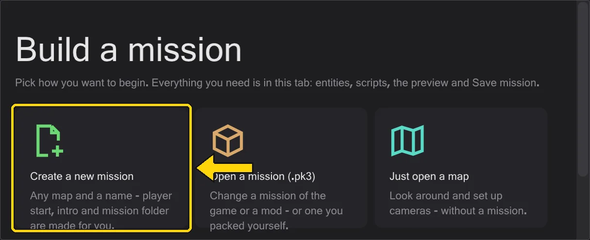

Getting started
Unpack, tell the program where the game is, open a mission. That is all the setup there is.
Install#
- 1
Download the latest
BehavEd-Remake-….zipfrom the releases page and unpack it into a folder of your choice - for example next to your game. Nothing is installed into Windows. - 2
Start
behaved.exe. At startup the program looks for a newer version on GitHub and offers it; nothing is downloaded without asking you (the switch is in Help).
Tell it where the game is#
Maps, models, sounds and the scripts of the game live in the game's .pk3 archives. Open Edit → Game folders and add the game folders with Add game folder: first base, then a mod such as Movie Duels (MD). The bottom folder wins, exactly as fs_game overrides base in the game.

Open something#
There are several ways in. The start page in the Mission tab (shown while no map is open) offers a new mission, a mission from a .pk3, just a map, and your recent missions. From the menu:
- A mission - File → Load mission picks a
.pk3and opens a mission with its map, its entities and all its scripts in tabs. See Missions. - A script - File → Open opens a
.txtor a compiled.ibifrom disk. - Your last missions - File → Recent missions reopens a whole mission with one click.

Language#
The program speaks English, German, Chinese and Japanese. It starts in the language of Windows; change it under View → Language. Command names and values stay as the game writes them (affect, SET_NAVGOAL), because that is what goes into the file.
handbuch folder next to behaved.exe and works without internet.